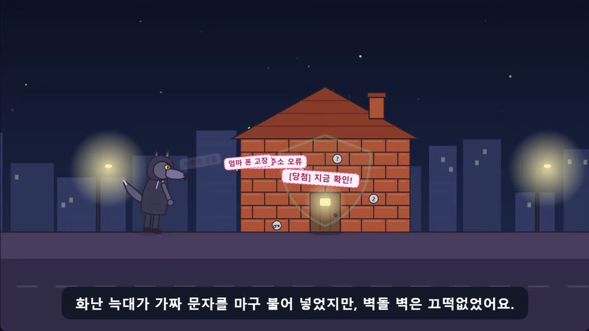
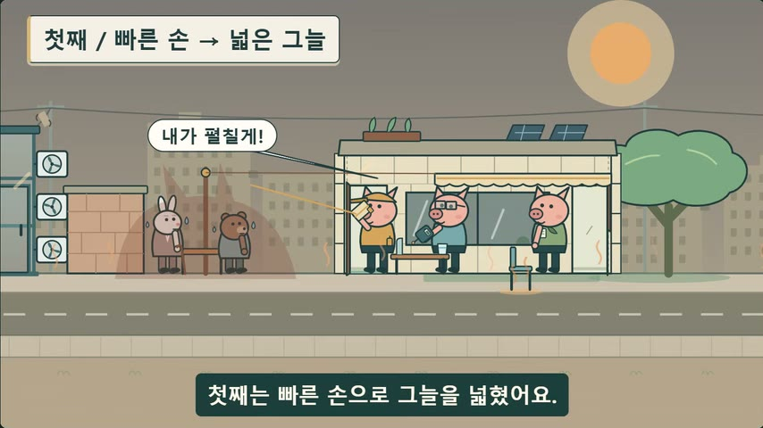
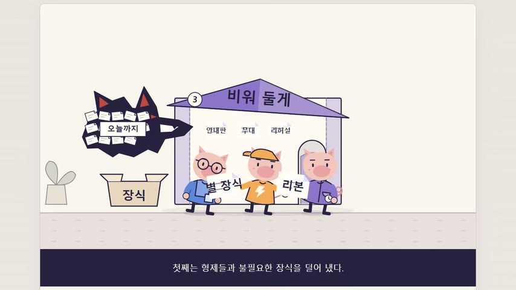
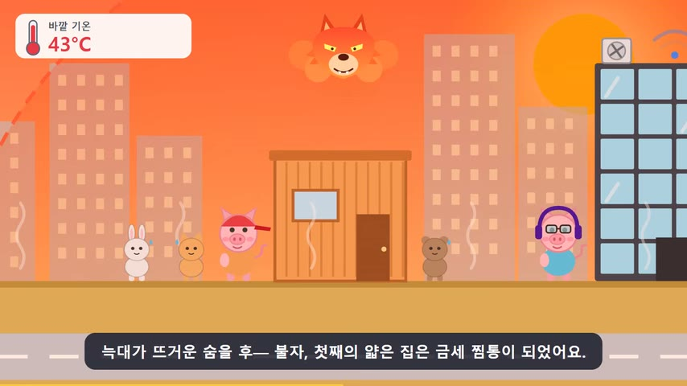
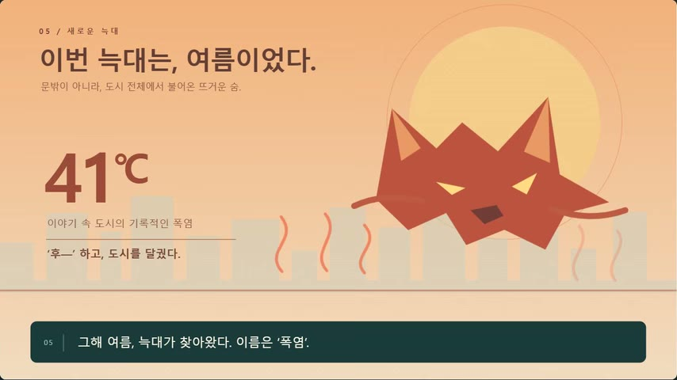

1라운드표의 1R 열
혼자 만들면 누가 나을까요?
Claude Opus 5.5와 GPT 6.1 sol이 같은 지시문만 받고 각자 빈 폴더에서 한 번에 만들었습니다. GPT는 약 10분, Opus는 약 34분 걸렸습니다. 이름을 가린 채점에서 Opus가 84.3 대 80.3으로 앞섰고, 승부는 모션 품질에서 갈렸습니다.
AI 모델 비교 실험 기록 · 2026년 10월 19일 · 1~3라운드
답 같은 기회를 받고 혼자 만든 Opus 솔로플러스도 협업만큼 해냈습니다(92.7점 대 90.7점). 협업의 승리는 분업보다 더 많은 시간·자료·고칠 기회 덕분이었을 수 있습니다.
한계 작품마다 한 번씩만 만들었고 2점 차이의 유의성은 확인하지 않았습니다. 채점관 셋 중 Argon은 협업을 1위로 꼽았습니다.
92.7 Opus 솔로플러스
90.7 협업
79.0 GPT 솔로플러스
요약 답 먼저
2라운드 협업작(93.3점)의 큰 승리는 분업 덕분만은 아니었을 수 있습니다. 3라운드에서 분업만 빼고 같은 참고 자료 · 설계 · 검토와 수정 기회를 받아 혼자 만든 Opus 솔로플러스가 92.7점으로 협업작(90.7점)과 비슷했고, GPT 솔로플러스는 79.0점이었습니다.
출처: 3라운드 채점 원문 보기(채점관 세 명의 JSON) · 세 명 평균 · 기계가 읽는 데이터: data/results.json, results.csv
한계 모든 작품을 한 번씩만 만들었고, 2점 차이의 유의성은 확인하지 않았습니다. 채점관도 AI 모델입니다. 점수는 같은 라운드 안에서만 비교하세요.
01 실험 설계
모든 작품은 같은 과제 지시문을 받았습니다. 「아기 돼지 삼형제」를 현대적으로 다시 쓴 60~90초 모션그래픽, index.html 한 파일, 외부 자원 없이. 아래 표에서 라운드마다 바뀐 조건이 차례로 켜집니다.
1라운드표의 1R 열
Claude Opus 5.5와 GPT 6.1 sol이 같은 지시문만 받고 각자 빈 폴더에서 한 번에 만들었습니다. GPT는 약 10분, Opus는 약 34분 걸렸습니다. 이름을 가린 채점에서 Opus가 84.3 대 80.3으로 앞섰고, 승부는 모션 품질에서 갈렸습니다.
2라운드표의 2R 열
GPT가 설계하고 Opus가 구현한 뒤, GPT가 검토하고 Opus가 고쳤습니다. 협업작은 93.3점으로 단독 두 편(74.3·73.0)을 크게 이겼습니다. 하지만 표에서 보듯 네 가지가 한꺼번에 달라졌습니다. 분업, 참고 자료, 설계서, 검토와 수정. 무엇 덕분인지 알 수 없습니다.
3라운드표의 3R 열
혼자 만드는 모델에게도 같은 참고 자료를 주고, 스스로 설계서를 쓰고, 진행자가 찍은 스크린숏을 보고 스스로 검토한 뒤 한 번 고치게 했습니다. 이것을 솔로플러스라고 부릅니다. 단계마다 새로 불러 파일로만 이어 간 것도 협업 때와 같습니다.
결과표의 결과 줄
다섯 작품 모두에 새 이름표(M · P · R · T · V)를 붙여 처음부터 다시 채점했습니다. 점수는 바로 아래 「점수로 지은 집」에서 봅니다. 시간은 똑같이 맞추지 않았습니다(Opus 솔로플러스 67분, GPT 솔로플러스 38분, 협업 108분).
02 결과 · 3라운드
점수로 지은 다섯 채의 집입니다. 집의 높이가 100점 만점 점수이고, 층 하나가 평가 항목 하나(20점 만점)입니다. 아래부터 스토리 · 흐름 · 화면 · 모션 · 기술 순서로 쌓습니다. 스크롤하면 바닥부터 층이 올라가고, 이어서 채점관이 Sonnet → GPT 심사 → Argon으로 바뀌며 순위가 뒤바뀌고, 마지막에 세 명 평균으로 돌아옵니다. 위로 되돌리면 거꾸로 돌아갑니다. 채점관이나 항목을 직접 골라 비교해 보세요.
세 채점관 평균입니다. 1위 표는 Opus 솔로플러스 2표(Sonnet · GPT 심사), 협업 1표(Argon)로 갈렸습니다.
집을 눌러 보세요. 층별 점수가 나와요.
점 하나가 채점관 한 명의 합계, 세로 막대가 평균입니다. 모양으로도 구분합니다: Sonnet GPT 심사 Argon
GPT 솔로플러스는 GPT 심사 89점, Sonnet 78점, Argon 70점으로 편차가 가장 컸습니다. Argon은 0~45초의 주황 띠 버그를 화면 구성(11점)에서 크게 깎았습니다.
네. 같은 작품도 함께 채점된 작품이 바뀌자 점수가 달라졌습니다. 그래서 점수는 같은 라운드 안에서만 비교합니다. GPT 단독 80.3 → 74.3 → 70.0, Opus 단독 84.3 → 73.0 → 72.7, 협업 93.3 → 90.7.
03 작품
3라운드 순위 순서입니다. 화면 가운데에 온 카드 한 편만 실제 재생 장면(8초)을 되풀이하고 나머지는 멈춘 사진으로 둡니다. 전체 재생을 누르면 그때 작품을 불러옵니다.





다섯 작품을 헤드리스 크롬(1600×900)에서 재생 버튼을 누른 뒤 같은 시각에 찍었습니다. 막대를 움직이면 같은 초의 장면이 나란히 바뀝니다. 장면을 누르면 크게 봅니다. 「영상 동시 재생」을 고르면 다섯 작품의 녹화 영상을 같은 시각에 맞춰 함께 재생합니다(헤드리스 크롬에서 녹화, 소리 없음).
04 제작 과정
막대 길이가 걸린 시간입니다(같은 시간축). 칸의 색은 그 단계를 맡은 모델입니다. 오른쪽 끝의 숫자는 3라운드 점수입니다. 오래 걸린 협업(108분)과 67분 걸린 Opus 솔로플러스의 점수가 비슷합니다.
1 설계 약 12분 · 2 구현 약 79분 · 3 검토 약 6분 · 4 수정 약 11분
1 설계 11분 20초 · 2 구현 31분 28초 · 3 검토 8분 36초 · 4 수정 15분 22초
1 설계 8분 26초 · 2 구현 11분 39초 · 3 검토 5분 19초 · 4 수정 12분 34초
1 한 번에 약 34분
1 한 번에 약 10분
진행자가 크롬으로 재생하며 스크린숏을 찍은 시간(작품마다 약 2분)은 넣지 않았습니다. 솔로플러스에는 시간 제한을 두지 않았습니다. 출처: README.md와 이전 보고 페이지의 제작 기록.
1라운드에서 드러난 강점대로 나눴습니다. GPT는 화면 디자인·이야기 매듭·튼튼한 재생기, Opus는 사건을 전하는 모션. 두 모델은 파일(설계서, 검토서)로만 주고받았습니다.
설계서 48KB: 88초 17장면표, 자막 20개, 카메라 기준점 5개
1차본 97KB, 도구 77회. 공간이 맞지 않는 7곳은 이유를 밝히고 바꿈
설계자가 수정 요청 9건(높음 7건)
7건 반영, 2건 부분 반영
두 모델에게 같은 단계 지시문 4개를 차례로 주었습니다. 단계마다 새로 불러 앞 대화를 기억하지 못하고, 폴더 안의 파일로만 이어 갔습니다. 브라우저는 쓰지 않았습니다.
Opus 11분 20초 · 자기 설계서 51KB(계정 사칭)
GPT 8분 26초 · 자기 설계서 약 40KB(끝없는 일)
Opus 31분 28초 · 설계서대로 index.html(명령줄 점검만)
GPT 11분 39초 · 설계서대로 index.html(명령줄 점검만)
Opus 8분 36초 · 스크린숏을 보고 고칠 점 16건(높음 4건)
GPT 5분 19초 · 스크린숏을 보고 고칠 점 11건
Opus 15분 22초 · 14건 반영, 2건 부분 반영
GPT 12분 34초 · 6건 반영, 5건 부분 반영
05 해석과 주의점
결론은 위 요약과 같습니다. 여기서는 점수표에서 직접 읽은 근거 네 가지와, 읽을 때 조심할 점을 모았습니다.
+20 / +9
Opus는 단독 72.7점에서 솔로플러스 92.7점으로, GPT는 70.0점에서 79.0점으로 올랐습니다. 참고 자료, 자기 설계, 한 번의 검토·수정을 더했을 뿐입니다.
3 : 2항목 승패
스토리(19.3 대 17.3) · 화면(18.0 대 17.3) · 모션(19.0 대 18.7)은 Opus 솔로플러스가, 흐름(17.7 대 18.3) · 기술(18.7 대 19.0)은 협업작이 조금 앞섰습니다. 시간은 약 67분으로 협업(108분)보다 짧았습니다.
79.0
GPT 솔로플러스는 스토리 17.7 · 기술 17.0으로 괜찮았지만 화면 13.7 · 모션 15.0이 낮았습니다. 수정 단계에서 첫째 돼지의 팔이 늘어나는 새 버그가 생겼고, 브라우저로 다시 보지 못해 남았습니다.
소재
참고 작품 두 편이 모두 폭염 이야기라서 Opus는 일부러 계정 사칭 · 피싱을 골랐고, 세 채점관 모두 독창성을 높이 샀습니다. 협업작은 1라운드 GPT 작품과 제목 · 주제가 같았습니다. 스토리 2점 차이는 이 영향일 수 있습니다.
모션이 사건을 설명하는 연기로 쓰였다
후반부 장면과 정보 칩이 밀집해 읽을 틈이 적다
형제의 재능을 그늘막·센서·이웃 안내라는 구체적 행동으로 증명한다.
폭염과 공동체라는 주제의 독창성은 상대적으로 제한적이다.
셋째의 방법에도 한계를 부여해 해결의 논리가 깊다.
주제와 늑대가 추상적이라 중학생에게 위협의 실감이 약하다
원작의 문 두드리기와 굴뚝 공격을 디지털 사칭 이야기로 치밀하게 연결한다.
원작의 모든 디테일을 현대 디지털 환경에 1:1로 대응시킨 독창적 스토리
집의 과열과 정전을 색·계기판·팬 동작으로 함께 설명한다.
낮은 프레임률에서 재생 시간이 늘어나는 구조적 문제가 있다.
표지부터 마지막 밤 장면까지 색채와 타이포그래피의 통일성이 높다.
중요한 사건을 행동으로 보여주는 모션이 부족하다.
06 자주 묻는 질문
이 실험만으로는 「협업하면 더 잘한다」고 말하기 어렵습니다. 2라운드에서 협업작은 93.3점으로 단독작(74.3점, 73.0점)을 크게 이겼지만, 3라운드에서 같은 참고 자료·설계·검토와 수정 기회를 받은 Opus 솔로플러스(Claude Opus 5.5가 같은 기회를 받고 혼자 만든 판)가 92.7점으로 협업작(90.7점)과 비슷했습니다. 협업의 승리는 분업보다 더 많은 시간·자료·고칠 기회 덕분이었을 수 있습니다. 다만 작품을 한 번씩만 만들었고 2점 차이의 유의성은 확인하지 않았으며, 1위 표는 Opus 솔로플러스 2표(Sonnet · GPT 심사), 협업 1표(Argon)로 갈렸습니다.
세 채점관 평균으로 1위는 Opus 솔로플러스 「문 열어, 나야」(92.7점), 2위 협업 「늑대가 된 여름」 협업판(90.7점), 3위 GPT 솔로플러스 「마감 늑대와 빈칸 있는 집」(79.0점), 4위 Opus 단독(72.7점), 5위 GPT 단독(70.0점)입니다. 1위 표는 Opus 솔로플러스 2표(Sonnet · GPT 심사), 협업 1표(Argon)로 갈렸습니다.
한 모델이 혼자 만들되 협업과 같은 이점을 준 방식입니다. 같은 참고 자료(단독 두 편, 과제지시문, 1라운드 평가 요약)를 읽고, 자기 설계서를 쓰고, 구현한 뒤, 진행자가 찍은 스크린숏을 보고 스스로 검토하고 한 번 고쳤습니다. 단계마다 새로 불러 파일로만 이어 갔고 브라우저는 쓰지 않았습니다.
세 회사의 AI 모델 Claude Sonnet 5.5(Anthropic), GPT 6.1 sol(OpenAI), Gemini 4 Argon high(Google, agy)가 작품 이름을 가린 채 채점했습니다. 스토리 구성, 이야기 흐름, 화면 구성, 모션 품질, 기술 완성도의 다섯 항목을 각 20점(합계 100점)으로 매겼고, 점수는 세 채점관의 평균입니다. 사람의 평가는 아닙니다.
GPT 단독 약 10분, Opus 단독 약 34분, 협업 약 108분(설계 12분, 구현 79분, 검토 6분, 수정 11분), Opus 솔로플러스 약 67분, GPT 솔로플러스 약 38분입니다. 3라운드는 시간이 아니라 정보와 반복 횟수를 맞춘 실험이라 걸린 시간은 서로 다릅니다.
아니요. 같은 이점을 받은 GPT 솔로플러스(GPT 6.1 sol이 혼자 만든 판)는 79.0점으로 협업작(90.7점)보다 약 12점 낮았습니다. 스토리(17.7)와 기술(17.0)은 괜찮았지만 화면 구성(13.7)과 모션(15.0)이 낮았고, 수정 단계에서 생긴 버그(첫째 돼지의 팔이 늘어나는 주황 띠)가 남았습니다.
권하지 않습니다. 같은 채점관도 라운드마다 처음부터 다시 채점했고, 함께 채점된 작품이 바뀌자 같은 작품의 점수가 움직였습니다. 예를 들어 GPT 단독작은 1라운드 80.3점, 2라운드 74.3점, 3라운드 70.0점이었습니다. 점수는 같은 라운드 안에서만 비교하세요.
이 페이지에서 다섯 작품을 직접 재생할 수 있고, GitHub 저장소 techkwon/three-pigs-motion-ai에 작품 HTML, 설계서·검토서, 라운드별 채점관 JSON(이유·강점·약점 포함)과 이름표 정답 파일이 있습니다.
07 방법과 자료
페이지 곳곳의 채점관 이름은 위 굵은 글씨(모양 표시: ● Sonnet, ■ GPT 심사, ◆ Argon)로 씁니다. 「GPT 심사」는 작품을 만든 GPT 6.1 sol과 같은 모델이지만 채점할 때는 작품 이름을 가린 채 따로 불렀습니다. 점수는 세 채점관의 평균입니다. 채점관은 작품 코드 전체, 재생 중 장면 사진, 휴대폰 화면, 시험에서 확인한 사실을 받았습니다.
다섯 항목 × 20점 = 100점
라운드마다 새 이름표를 붙이고 처음부터 다시 채점했습니다().
두 단독 작품만 A/B로 가려 채점했습니다. 승부는 모션 품질(Opus 18.3 대 GPT 12.3)에서 갈렸고, 화면 구성과 기술 완성도는 GPT가 앞섰습니다. Sonnet과 Argon은 Opus 단독을 7점 앞에, GPT 심사는 GPT 단독을 2점 앞에 두었습니다.
1라운드 채점관별 점수(항목마다 20점, 합계 100점)
| 작품(이름표) | 합계 | 순위 | 스토리 | 흐름 | 화면 | 모션 | 기술 |
|---|---|---|---|---|---|---|---|
| Sonnet Claude Sonnet 5.5 · Anthropic | |||||||
| Opus 단독 B | 81 | 1위 | 17 | 16 | 15 | 18 | 15 |
| GPT 단독 A | 74 | 2위 | 15 | 15 | 17 | 11 | 16 |
| GPT 심사 GPT 6.1 sol · OpenAI | |||||||
| Opus 단독 B | 83 | 2위 | 17 | 16 | 16 | 18 | 16 |
| GPT 단독 A | 85 | 1위 | 18 | 17 | 18 | 13 | 19 |
| Argon Gemini 4 Argon high · Google | |||||||
| Opus 단독 B | 89 | 1위 | 18 | 18 | 18 | 19 | 16 |
| GPT 단독 A | 82 | 2위 | 19 | 16 | 16 | 13 | 18 |
| 세 명 평균 블라인드 평균 | |||||||
| Opus 단독 B | 84.3 | 1위 | 17.3 | 16.7 | 16.3 | 18.3 | 15.7 |
| GPT 단독 A | 80.3 | 2위 | 17.3 | 16.0 | 17.0 | 12.3 | 17.7 |
출처: 1라운드 채점 원문 보기(채점관 세 명의 JSON과 이름표 정답)
세 작품을 X/Y/Z로 가렸습니다. 세 채점관 모두 협업작을 1위로 꼽았고, 다섯 항목 모두 협업작 평균이 가장 높았습니다. 협업작 사본에서는 「협업」이라고 적힌 주석 두 줄을 지웠습니다.
2라운드 채점관별 점수(항목마다 20점, 합계 100점)
| 작품(이름표) | 합계 | 순위 | 스토리 | 흐름 | 화면 | 모션 | 기술 |
|---|---|---|---|---|---|---|---|
| Sonnet Claude Sonnet 5.5 · Anthropic | |||||||
| 협업 Y | 92 | 1위 | 18 | 18 | 18 | 19 | 19 |
| GPT 단독 X | 73 | 3위 | 16 | 14 | 17 | 10 | 16 |
| Opus 단독 Z | 77 | 2위 | 17 | 16 | 15 | 15 | 14 |
| GPT 심사 GPT 6.1 sol · OpenAI | |||||||
| 협업 Y | 92 | 1위 | 19 | 18 | 17 | 19 | 19 |
| GPT 단독 X | 79 | 2위 | 18 | 15 | 18 | 11 | 17 |
| Opus 단독 Z | 73 | 3위 | 16 | 14 | 14 | 16 | 13 |
| Argon Gemini 4 Argon high · Google | |||||||
| 협업 Y | 96 | 1위 | 19 | 19 | 19 | 19 | 20 |
| GPT 단독 X | 71 | 2위 | 15 | 14 | 15 | 11 | 16 |
| Opus 단독 Z | 69 | 3위 | 16 | 13 | 14 | 14 | 12 |
| 세 명 평균 블라인드 평균 | |||||||
| 협업 Y | 93.3 | 1위 | 18.7 | 18.3 | 18.0 | 19.0 | 19.3 |
| GPT 단독 X | 74.3 | 2위 | 16.3 | 14.3 | 16.7 | 10.7 | 16.3 |
| Opus 단독 Z | 73.0 | 3위 | 16.3 | 14.3 | 14.3 | 15.0 | 13.0 |
출처: 2라운드 채점 원문 보기(채점관 세 명의 JSON과 이름표 정답)
다섯 작품을 M·P·R·T·V로 새로 가렸습니다(M = GPT 단독, P = Opus 단독, R = Opus 솔로플러스, T = GPT 솔로플러스, V = 협업). 1위 표는 Opus 솔로플러스 2(Sonnet · GPT 심사), 협업 1(Argon)로 갈렸습니다. 블라인드 사본에서는 협업작의 「협업」 주석 줄과 「(설계서 원문 그대로)」만 지웠습니다.
3라운드 채점관별 점수(항목마다 20점, 합계 100점)
| 작품(이름표) | 합계 | 순위 | 스토리 | 흐름 | 화면 | 모션 | 기술 |
|---|---|---|---|---|---|---|---|
| Sonnet Claude Sonnet 5.5 · Anthropic | |||||||
| Opus 솔로플러스 R | 90 | 1위 | 19 | 17 | 17 | 19 | 18 |
| 협업 V | 84 | 2위 | 16 | 17 | 16 | 17 | 18 |
| GPT 솔로플러스 T | 78 | 3위 | 17 | 15 | 14 | 15 | 17 |
| Opus 단독 P | 77 | 4위 | 16 | 15 | 16 | 16 | 14 |
| GPT 단독 M | 70 | 5위 | 15 | 14 | 16 | 10 | 15 |
| GPT 심사 GPT 6.1 sol · OpenAI | |||||||
| Opus 솔로플러스 R | 94 | 1위 | 19 | 18 | 19 | 19 | 19 |
| 협업 V | 92 | 2위 | 18 | 19 | 17 | 19 | 19 |
| GPT 솔로플러스 T | 89 | 3위 | 19 | 17 | 16 | 18 | 19 |
| Opus 단독 P | 75 | 5위 | 16 | 14 | 15 | 17 | 13 |
| GPT 단독 M | 78 | 4위 | 18 | 14 | 17 | 12 | 17 |
| Argon Gemini 4 Argon high · Google | |||||||
| Opus 솔로플러스 R | 94 | 2위 | 20 | 18 | 18 | 19 | 19 |
| 협업 V | 96 | 1위 | 18 | 19 | 19 | 20 | 20 |
| GPT 솔로플러스 T | 70 | 3위 | 17 | 15 | 11 | 12 | 15 |
| Opus 단독 P | 66 | 4위 | 15 | 14 | 14 | 13 | 10 |
| GPT 단독 M | 62 | 5위 | 14 | 11 | 13 | 9 | 15 |
| 세 명 평균 블라인드 평균 | |||||||
| Opus 솔로플러스 R | 92.7 | 1위 | 19.3 | 17.7 | 18.0 | 19.0 | 18.7 |
| 협업 V | 90.7 | 2위 | 17.3 | 18.3 | 17.3 | 18.7 | 19.0 |
| GPT 솔로플러스 T | 79.0 | 3위 | 17.7 | 15.7 | 13.7 | 15.0 | 17.0 |
| Opus 단독 P | 72.7 | 4위 | 15.7 | 14.3 | 15.0 | 15.3 | 12.3 |
| GPT 단독 M | 70.0 | 5위 | 15.7 | 13.0 | 15.3 | 10.3 | 15.7 |
출처: 3라운드 채점 원문 보기(채점관 세 명의 JSON과 이름표 정답)
한 모델이 혼자 만들되, 협업과 같은 이점을 준 방식입니다. 같은 참고 자료 → 자기 설계서 → 구현 → 스크린숏을 보고 자기 검토 → 수정 1회.
채점관이 어느 모델이 만든 작품인지 모르게 이름을 가리고 채점했습니다. 정체를 드러내는 주석도 지웠습니다.